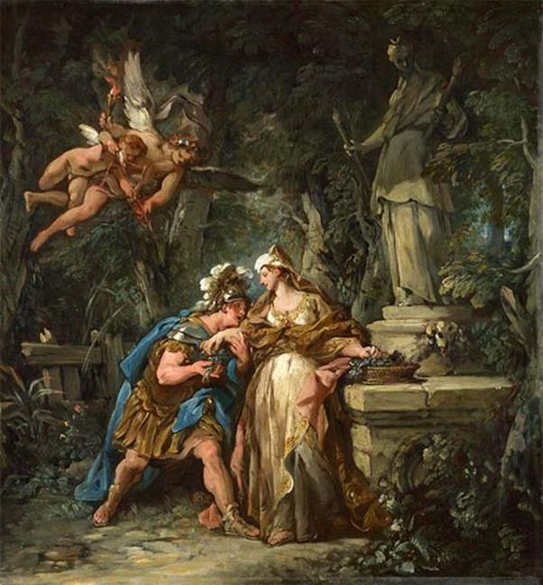

Jason và các chiến hữu từ cung điện trở về con thuyền của mình. Chàng kể lại cho anh em canh giữ con thuyền biết tình hình buổi yết kiến vừa rồi. Mọi người đều cảm thấy những công việc mà vua Aiétès đòi họ phải thực hiện quả là không dễ dàng. Làm cách gì để thực hiện được những công việc đó? Phải bắt đầu từ đâu? Những người Argonautes ngồi quây quần bên nhau và đắm chìm trong suy nghĩ. Bỗng Argos, con trai của Phrixos và Chalciopé, cháu ngoại của vua Aiétès, cất tiếng nói:
- Hỡi các bạn! Ta vừa mạo muội nghĩ ra một kế này xin đánh bạo trình bày để các bạn cứu xét. Vua Aiétès có một người con gái út tên là Médée. Nàng là em ruột của mẹ ta. Nàng vừa có nhan sắc tuyệt vời lại tinh thông pháp thuật bởi vì nàng hiến thân cho việc thờ phụng nữ thần Hécate, một nữ thần khủng khiếp của thế giới âm phủ, thường xúi giục con người phạm tội ác. Chúng ta có thể nhờ nàng giúp đỡ chăng? Ta có thể nhờ mẹ ta nói với nàng. Nếu Médée nhận lời giúp đỡ thì ta nghĩ mười phần xong đến bảy, tám.
Argos vừa nói xong thì bỗng đâu có một con chim bồ câu trắng bay hối hả ngang qua thuyền. Mọi người đưa mắt nhìn lên trời thì thấy con bồ câu đang bị một con chim ưng rượt đuổi, con bồ câu sà xuống thấp bay lượn quanh anh em thủy thủ và đột nhiên lao thẳng vào người Jason, chúi vào nấp trong vạt áo khoác của chàng. Còn con chim ưng bỗng dưng không bị ai bắn mà lộn nhào rơi, rơi ngay xuống thuyền. Người anh hùng Mopsos nổi danh vì tài tiên đoán bèn kêu lên:
- Hỡi anh em! Đây là một điềm báo tốt lành của thần linh mà ta do kinh nghiệm và thời gian dạy cho biết. Đúng như bạn Argos vừa đề đạt chúng ta, hãy cầu xin Médée giúp đỡ! Sự việc chẳng đã quá rõ rồi sao? Con chim bồ câu, con chim của nữ thần Aphrodite đã tìm được nơi trú ngụ an toàn trong vạt áo khoác của Jason. Như thế chẳng phải là nữ thần Aphrodite muốn nhắc nhở Jason hãy hướng tới nữ thần, vị nữ thần đầy quyền lực của Tình yêu và Sắc đẹp. Chính lão ông Phinée nhà tiên tri mù đã khuyên chúng ta cầu xin sự giúp đỡ của nữ thần. Vậy chúng ta hãy mau mau sắm sửa lễ vật tới đền thờ nữ thần Aphrodite để rồi xin nàng giúp đỡ chúng ta. Còn Argos hỡi! Chúng ta thấy không còn cách nào tốt hơn là cách nhờ anh về nói với mẹ anh thuyết phục nàng Médée giúp đỡ chúng ta.
Nghe Mopsos nói như vậy thì mọi người đều tán thưởng. Họ bắt tay vào việc sắm sửa lễ vật để đến cầu nguyện ở đền thờ nữ thần Aphrodite. Còn Argos thì lãnh ý của anh em trở về cung điện tìm gặp mẹ.
Trong khi những người Argonautes lo toan bàn định công việc của mình thì nhà vua Aiétès triệu tập thần dân đến quảng trường để nghe những chỉ lệnh tối khẩn. Nhà vua vẫn nuôi giữ trong trái tim ý nghĩ xấu xa về những người Argonautes. Ông truyền cho mọi người phải đề phòng họ, theo dõi họ chặt chẽ gắt gao, đặc biệt phải chú ý đến con thuyền và không cho nó được rời bến. Trong thâm tâm Aiétès mưu tính một kế sách thâm hiểm. Jason chắc chắn sẽ không thực hiện được những công việc mà ông đã giao. Y sẽ bỏ mạng khi đụng đầu với những con bò mộng hung dữ, phun ra lửa. Sau khi y chết, nhà vua sẽ ra lệnh tấn công đốt cháy con thuyền, bao vây và bắt giết sạch những người Argonautes. Cuối cùng sẽ đưa bốn người con trai của Phrixos ra hành hình, những đứa cháu ngoại mà Aiétès cho là đã phản bội.
Nói về Médée, từ khi gặp người anh hùng Jason trong trái tim nàng dấy lên lòng mến phục và yêu thương. Nàng mến phục người anh hùng đã vì sự nghiệp của tổ tiên chẳng quản gian lao nguy hiểm dấn thân vào một cuộc phiêu lưu mà ít người dám nghĩ đến. Nàng thương người dũng sĩ đẹp đẽ, cao lớn to khỏe sánh tựa thần linh phải đương đầu với những thử thách mà nàng biết chắc rằng nếu không được nàng giúp đỡ thì chàng chỉ là mồi ngon cho thần Chết. Nàng cảm phục những lời lẽ khiêm nhường mà rắn rỏi của chàng khi nói chuyện với vua cha. Ý nghĩ về chàng trai Jason sẽ bị chết vì những thử thách thâm độc của vua cha khiến nàng không sao chợp mắt được. Nàng trằn trọc trên giường hồi lâu, và khi ngủ thiếp đi lại bị những cơn mê hoảng đè nặng. Nàng sợ hãi thét lên trong giấc ngủ khiến chị nàng giật mình tỉnh dậy, chạy vội tới săn sóc nàng. Médée thuật lại cho chị nghe cơn ác mộng vừa qua: các con của chị bị giết chết thê thảm, Jason bị đôi bò phun lửa thiêu chết, những người Argonautes bị vua cha vây bắt... Chị nàng bèn an ủi, khuyên giải Médée, nhưng chính Chalciopé cũng cảm thấy lo lắng cho số phận những người con trai yêu quý của mình. Jason mà chết tất nhiên cha nàng chẳng để cho các con nàng yên. Chỉ có cách giúp Jason hoàn thành sứ mạng thì mới có thể hy vọng cứu được con. Chalciopé nói cho Médée biết ý nghĩ của mình, còn Médée, nàng thấy cần phải giúp Jason vượt qua những thử thách nguy hiểm để cứu sống những đứa con của chị mình, hơn nữa nàng thấy không đành tâm để một người anh hùng rất đáng kính yêu như Jason bị chết oan uổng vì một âm mưu nham hiểm mà chính nàng là người biết rõ và có thể cứu sống được chàng. Vả lại nàng chẳng có điều gì căm ghét Jason cũng như những người Argonautes. Hai chị em bàn bạc, than thở hồi lâu rồi cuối cùng Médée quyết định:
- Chị ơi! Có lẽ em chỉ còn cách giúp Jason thôi. Nhưng như thế là phản lại cha, cha mà biết được thì chẳng còn được nhìn thấy chị nữa đâu. Vì thế chị phải giữ kín cho em việc này. Chuyện mà lộ ra thì chẳng phải mình em đâu mà cả chị và các cháu nữa sẽ phải chịu những hình phạt khủng khiếp. Chị hãy nhắn chàng Jason, sáng sớm mai đến đền thờ nữ thần Hécate, chàng sẽ gặp người chỉ cho cách vượt qua những khó khăn để hoàn thành những thử thách mà vua Aiétès đã giao cho.
Nghe Médée nói xong, ngay trong đêm đen, lập tức Chalciopé ra đi. Chỉ còn lại Médée ngồi một mình với biết bao ý nghĩ giằng xé trái tim. Bên tình, bên hiếu, bên cha, bên cháu, kể ra cũng khó xử. Bị dằn vặt vì những ý nghĩ đó, có lúc Médée đã mở lọ thuốc độc ra toan uống một liều để chấm dứt nỗi giằng xé trong lòng, nhưng nữ thần Héra, người thương yêu Jason rất mực, không thể để cho nàng chết. Nữ thần đã khơi lên trong trái tim nàng ngọn lửa mến yêu, khát khao cuộc sống. Còn mũi tên vô hình của Éros, cậu con trai của nữ thần Aphrodite, đã khơi lên trong trái tim nàng ngọn lửa tình yêu, khiến nàng luôn luôn tưởng nhớ đến Jason mà gạt bỏ mọi đắn đo, do dự để quyết tâm giúp đỡ chàng.
Sáng hôm sau khi bình minh vừa ửng đỏ chân trời thì cũng là lúc Argos chạy đến báo tin cho những người Argonautes biết, Médée đã thuận lòng giúp đỡ. Ngay tức khắc Jason, dưới sự dẫn đường của Argos cùng với nhà tiên tri Mopsos, lên đường đi tới đền thờ nữ thần Hécate. Còn nữ thần Héra, người vợ có cánh tay trắng muốt của thần Zeus, đấng phụ vương, không hề sao nhãng việc giúp đỡ Jason. Nữ thần đã làm cho Jason uy nghiêm đẹp đẽ hẳn lên khiến cho anh em thủy thủ Argonautes trông thấy ai nấy đều trầm trồ khen ngợi và ngắm nhìn chàng say đắm như ngắm nhìn một tiên nữ con của Zeus.
Khi Jason tới đền thờ nữ thần Hécate thì Médée đã đứng chờ chàng ở trong đền. Hai người gặp nhau song rất khó nói. Jason nhìn Médée và chờ đợi, còn Médée không dám nhìn thẳng vào chàng, nàng ngượng ngùng cúi nhìn xuống đất và chẳng cất được lên lời. Jason thấy vậy bèn cất tiếng, phá tan sự im lặng.
- Hỡi Médée, người con gái xinh đẹp tuyệt trần, con của vua Aiétès trị vì đất nước Colchide hùng cường! Vì sao nàng hẹn ta đến đây mà nàng lại không lên tiếng trước? Hay nàng sợ hãi điều gì chăng? Ta xin trân trọng nhắc lại với nàng rằng chúng ta, những người thủy thủ Argonautes, từ đất Hy Lạp thần thánh xa xôi vượt biển khơi mênh mông sóng dữ đến đây không phải để gieo rắc tai họa và chết chóc cho các giống người, con của đấng phụ vương Zeus. Không, ta đến đây với những ý nghĩ tốt đẹp trong trái tim. Hiện nay ta đang đứng trước những thử thách khó khăn mà ta biết ngoài nàng ra thì không ai là người có thể giúp đỡ ta vượt qua được. Vì thế, hôm nay ta đến để cầu xin sự giúp đỡ của nàng. Hỡi Médée! Người con gái xinh đẹp và tài năng, con của Aiétès. Xin nàng hãy vì các vị thần thiêng liêng ngự trị ở trên bầu trời cao cả, nói cho ta biết rõ những sự thật về những cuộc thử thách mà ta sắp phải trải qua. Xin nàng hãy giúp đỡ ta, chỉ bảo cho ta cách vượt qua những thử thách đó. Cầu thần Zeus và các vị thần Cực lạc ban cho nàng một người chồng xứng đáng, của cải thật tràn trề mà danh thơm cũng vang dội. Nàng chẳng đã từng biết đến sự giúp đỡ của nàng Ariane, con gái của vua Minos, đối với người anh hùng Thésée đó sao. Vinh quang của Thésée chính là vinh quang của Ariane. Ta tin chắc rằng nếu nàng giúp đỡ ta hoàn thành được sự nghiệp vẻ vang này thì chẳng những ta đời đời biết ơn nàng mà tên tuổi của nàng cũng được những người Hy Lạp đời đời ghi nhớ. Nữ thần Hécate, vị thần ngự trị ở ngôi đền này sẽ chứng giám cho những lời nói chân thật của ta cũng như của nàng. Những kẻ dối trá, xúc phạm đến chốn thiêng liêng nơi ngự trị của công lý hẳn sẽ không tránh khỏi đòn trừng phạt. Thần Zeus, người bảo hộ cho những kẻ sa cơ lỡ bước và những kẻ đi cầu xin sự giúp đỡ, đã đưa ta đến gặp nàng hẳn rằng không phải để ta thất vọng.
Médée mạnh dạn nhìn thẳng vào Jason với trái tim cảm phục và trìu mến. Nàng cất tiếng nói những lời lẽ dịu dàng như sau:
- Hỡi Jason, người anh hùng cầm đầu những người Argonautes! Xin chàng hãy nghe em nói. Trái tim em chẳng phải là một trái tim bằng sắt và cũng chẳng phải một trái tim nghi ngờ. Em tin lời chàng nói và sẵn sàng giúp đỡ chàng, Tối nay chàng hãy ra sông tắm, sau đó chàng không được mặc một bộ quần áo gì khác ngoài một bộ quần áo màu đen. Chàng hãy đào một cái hố sâu bên bờ sông và đem theo đến đó một con cừu đen tẩm mật ong để làm lễ hiến tế nữ thần Hécate. Sau khi làm xong những công việc đó chàng hãy đi ngay về con thuyền Argo của mình, nhưng chàng phải nhớ kỹ là đi ngay, đi thẳng một mạch không được ngoái nhìn lại đằng sau. Chàng đi và sẽ nghe thấy tiếng người kêu la và tiếng chó sủa dữ tợn, nhưng chàng đừng sợ. Chàng cứ đi thẳng một mạch cho tới đích. Đêm đen sẽ qua đi và bình minh thức dậy ở chân trời. Khi đó chàng hãy lấy lọ dầu thiêng này xoa vào khiên giáp và vũ khí đồng ngời sáng của chàng. Chàng cũng đừng quên xoa chất dầu thiêng đó lên khắp thân thể của chàng. Đây là một loại dầu thần diệu sẽ làm cho chàng trở thành mình đồng da sắt, chàng nhờ đó sẽ có sức mạnh vô địch. Nó được chế ra từ nhựa của một thứ rễ cây, rễ cây này mọc ra từ máu của người anh hùng Prométhée. Vì thế chẳng có gì thiêu đốt, đè bẹp, nghiền tan, vùi dập được nó. Chàng có thể yên tâm khi phải đối mặt với những con bò hung dữ phun ra lửa.

Jason cầu khẩn Médée giúp đỡ
Sau khi cày xong cánh đồng và gieo xuống đó những “hạt” răng của con rồng thì không phải là cỏ cây hoa lá sẽ mọc lên. Chàng hãy nhớ kỹ lấy: khi rừng chiến binh mọc lên trùng trùng điệp điệp thì chàng hãy bình tĩnh ném vào giữa hàng ngũ chúng một hòn đá. Lập tức chúng sẽ đánh nhau, và chỉ khi nào chúng giết nhau đã vãn thì chàng mới tham chiến. Đó là tất cả những điều cần thiết em nói với chàng. Cầu xin thần Zeus, vị thần phụ vương cai quản thế giới thần thánh và người trần; cầu xin nữ thần Athéna, người con gái đầy tài năng và kiêu hãnh của Zeus, giúp chàng chiến thắng vẻ vang trong cuộc thử thách này! Rồi đây, sau khi đoạt được Bộ lông Cừu vàng, chàng sẽ lên đường trở về quê hương Hy Lạp với niềm vui của người chiến thắng. Còn em ở lại đây không rõ số phận sẽ ra sao sau khi đã phản bội vua cha để giúp đỡ chàng. Dù sao em cũng xin chàng ban cho một ân huệ là mỗi khi chàng làm lễ hiến tế các vị thần Cực lạc ở chốn thiêng liêng xin chàng đừng quên cầu nguyện cho em.
Jason chăm chú nghe những lời Médée nói. Chàng không biết nói gì hơn và bày tỏ lòng cảm ơn, nghìn lần cảm ơn đối với sự giúp đỡ của nàng. Cuối cùng, chàng kêu bên:
- Chao ôi! Tình cảm thật éo le. Ước gì vua cha em từ bỏ những ý nghĩ và hành động thù địch đối với những người Hy Lạp! Ước gì người cho phép nàng được theo ta, gắn bó cuộc đời với ta trên quê hương Hy Lạp thần thánh!
Médée đáp lại, nói cho chàng biết tính tình cứng rắn, khắc nghiệt của Aiétès. Nàng chỉ xin chàng duy nhất có một điều khi trở về Hy Lạp chàng đừng quên nàng. Việc ra đi theo chàng là không thể thực hiện được vì gặp rất nhiều khó khăn, nhưng nữ thần Héra lúc nào cũng theo sát bên Jason để giúp đỡ chàng. Nữ thần nghe thấy hết câu chuyện giữa hai người. Nữ thần bèn bằng tài năng siêu việt của mình không để cho những ý nghĩ mà Médée đã nói ra nằm đọng lại trong trái tim nàng. Nữ thần xua tan nó đi và khơi lên trong trái tim nàng tình yêu say đắm đối với Jason, khát vọng muốn gắn bó cuộc đời với chàng, muốn theo chàng đi đến tận cùng trời cuối đất. Còn Jason, nữ thần làm cho trái tim chàng thêm mạnh dạn quả cảm, sẵn sàng vượt qua mọi khó khăn để đưa Médée đi cùng với mình. Hai người chia tay ước hẹn sẽ gặp lại nhau để bàn chuyện vượt biển.